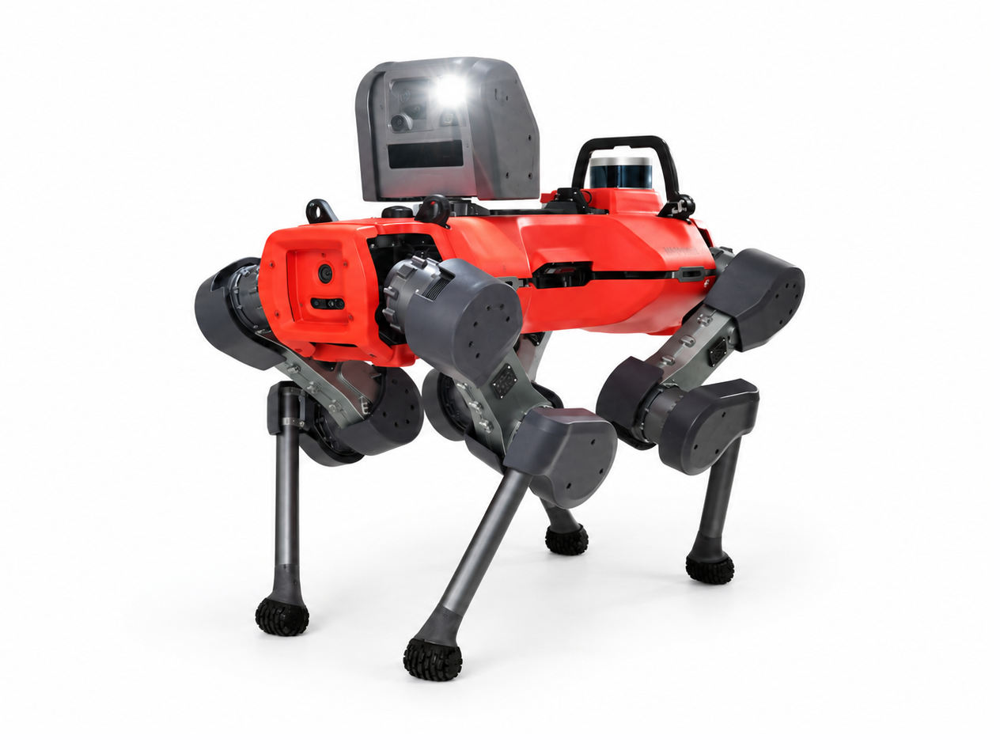
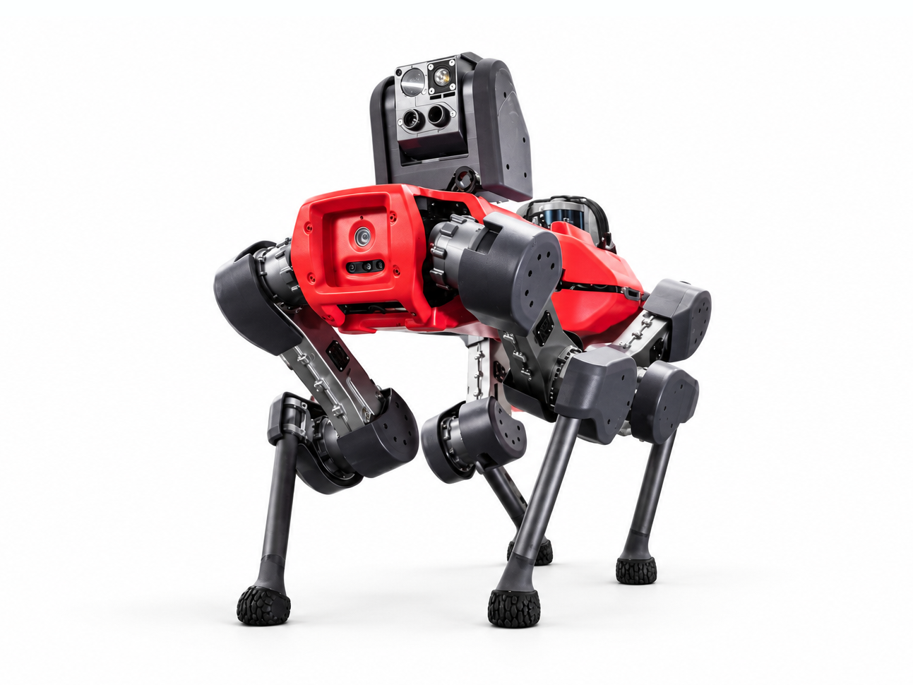
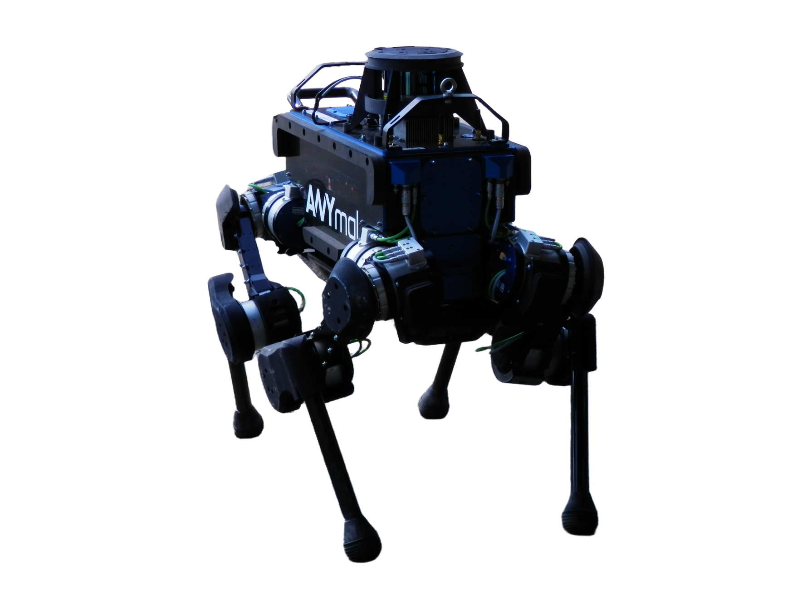
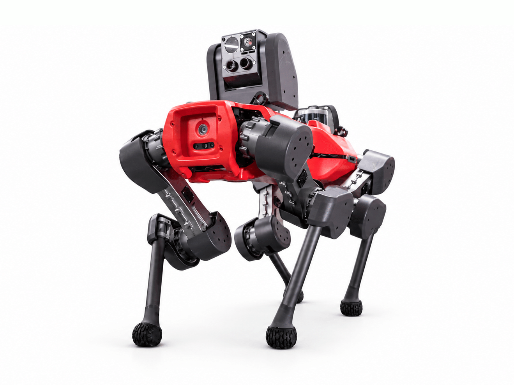

ANYmal C
A quadruped robot from Switzerland, first released 2019.
Sources retrieved: 4 September 2026 (A)
- Status
- Discontinued
- Applications
- Indicative price
- Not stated
- Intended use, per the manufacturer
- Autonomous mobile robot for routine inspection in energy, chemical, and industrial processing plants.Source and note: Intended use, per the manufacturerA anybotics.com/anymal-specifications-sheet/ · Retrieved 4 September 2026

Manufacturer's own photo.
Specifications
14/33 specifications disclosed 19 not stated
19 fields hidden
How to read the figuresShow guideClose
Not statedThe manufacturer states nothing about this field.YesStated: the robot has this.NoStated: the robot does not have this.A marker with an asterisk (*) also carries a caveat.
Select a source marker for source details and notes.
Physical7/14 disclosed
Power3/5 disclosed
Sensing and autonomy2/6 disclosed
Payload and expansion0/3 disclosed
Commercial0/1 disclosed
Compliance & certifications2/4 disclosed
Against the field
Each strip holds every robot of this type in the guide that states the figure, one bar per group of values. Further right means a larger figure, not a better robot.
Weight
50kg110lbOur conversion from 50 kg. The manufacturer does not state an imperial figure itself, so the conversion has no source of its own.
126 quadrupeds state a weight
39 state a higher figure, 79 a lower one. 4 more state exactly the same figure. Log scale: each step along the axis multiplies the value.
Degrees of freedom
12DoF
76 quadrupeds state degrees of freedom
15 state a higher figure, 4 a lower one. 56 more state exactly the same figure.
Runtime
120minNote: load condition not stated
106 quadrupeds state a runtime
49 state a higher figure, 15 a lower one. 7 more state exactly the same figure.
Max speed
3.6km/h2.24mphOur conversion from 1 m/s. The manufacturer does not state an imperial figure itself, so the conversion has no source of its own.
115 quadrupeds state a top speed
81 state a higher figure, 3 a lower one. 1 more states exactly the same figure.
Notes
An autonomous industrial inspection quadruped developed by ANYbotics AG in Zurich, Switzerland.
Uses omnidirectional 360-degree LiDAR obstacle perception and a modular pan-tilt inspection head for industrial facilities.
Sources
One line per source, not per figure: a source has one retrieval date.
- Aanybotics.com/anymal-specifications-sheet/Main source. Retrieved 4 September 2026
More robots
Same manufacturer

ANYmal (Generation D)ANYbotics

ANYmal BANYbotics

ANYmal XANYbotics